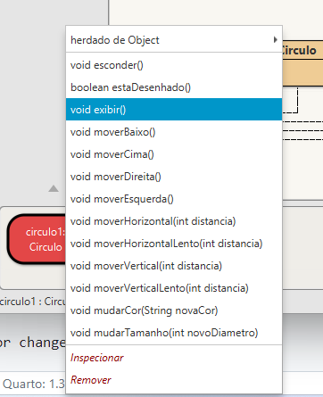

IPOO - Cap. 1 Objetos e Classes
Aula 1.1 - Teórica
23/09/2024
Como estudar esse conteúdo?
Uma dica fundamental é:
O conteúdo é totalmente atrelado à prática usando o BlueJ.
Não adianta ler os slides, ou ficar apenas assistindo à videoaula.
É necessário usar o BlueJ e praticar você mesmo!
Se ainda não instalou o BlueJ em seu computador, a hora é agora!

Como estudar esse conteúdo?
Além disso, estes slides se baseiam no Cap. 1 do livro do Barnes e Kölling.

- Eles seguem de forma bem direta o livro, com algumas poucas coisas a mais.
- Portanto, é muito interessante também ler o capítulo no livro para tirar dúvidas e complementar o que está sendo estudado.
Dica: faça anotações!
Em qualquer dos casos, é altamente recomendável, ter um caderno e caneta para anotar os principais conceitos e eventuais dúvidas que surgirem.
Como você descreveria essa cena para alguém não a está vendo?

Provavelmente listando os objetos que nela se encontram.
- Isso porque nós entendemos o mundo através dos objetos!
E o que essas imagens têm em comum?

Elas são objetos!
Uma classe pode ser vista como o projeto de um carro:

Em uma fábrica de automóveis, por exemplo:
- Os engenheiros criam o projeto do carro.
- Depois os carros são produzidos de acordo com aquele projeto.
Nesse exemplo o projeto seria a classe, e os carros os objetos.

Pode realmente acontecer de nosso programa ter apenas um objeto de uma determinada classe.
Baixe o projeto de exemplo figuras e abra-o no BlueJ.
Como baixar o projeto?
Os projetos da disciplina são disponibilizados no GitHub. Se nunca o utilizou, não se preocupe, basta fazer o seguinte:
- Clicando no link do projeto você verá um botão verde bem destacado escrito
Code. - Clique nele e vá na última opção:
Download ZIP. - Descompacte o arquivo no seu computador, entre na pasta criada e clique duas vezes no arquivo:
package.bluej.
Ao abrir o projeto, você verá um diagrama.
- Cada retângulo representa uma classe no seu projeto.
- Clique com o botão direito em Circulo e escolha a opção new Circulo().
- O sistema pedirá o nome da instância, apenas clique em OK.

Clique com o botão direito no objeto círculo (não na classe!) e você verá um menu com várias opções.

Escolha a opção exibir no menu
- Isso vai desenhar uma representação do círculo em uma janela separada

Já os valores dos atributos são guardados dentro do objeto.
- Por isso, que cada círculo pode ter uma cor diferente, por exemplo.


Entrega no Campus Virtual
Tire um print da imagem que você criou no exercício anterior. Você precisará desse print para as atividades de entrega dessa aula!
As aulas teóricas dessa disciplina são no formato ANP (Atividade Não-Presencial).
- Isso significa que você precisa estudar o conteúdo da aula à distância.
- E para que você tenha a presença considerada para essa aula, você precisa demonstrar que realmente estudou o conteúdo.
Para essa aula, você terá presença se fizer todos os itens abaixo.
Entregas no Campus Virtual
Responda, no Campus Virtual, aos quizes presentes nesses slides.
Envie o print que tirou no exercício da seção O que tem dentro de um objeto.
Envie também o print da tela que aparece no último passo do exercício abaixo.